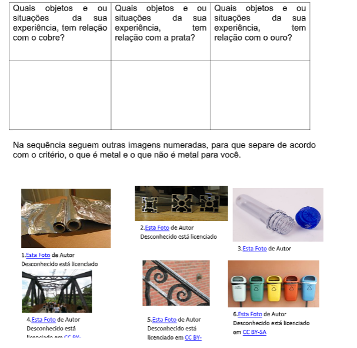
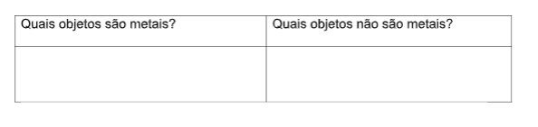
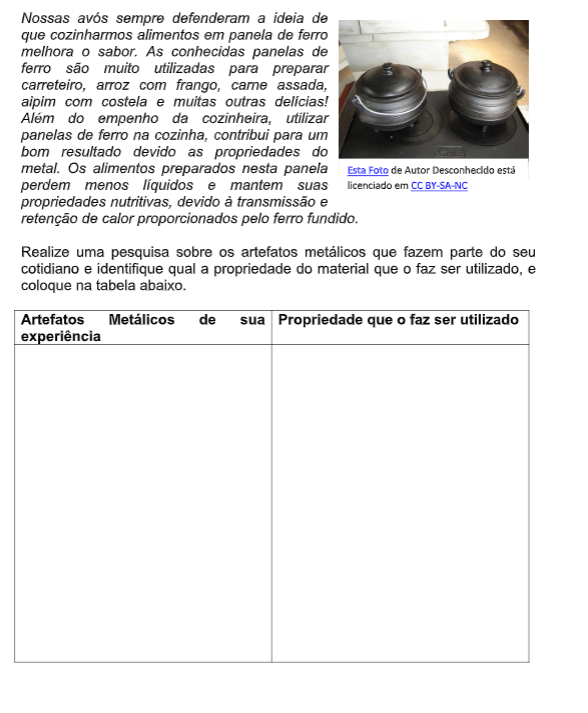
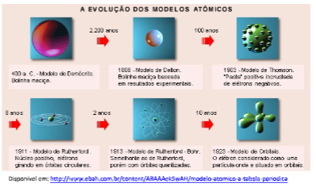
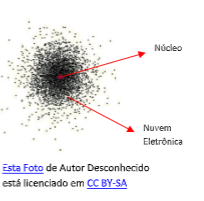
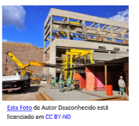
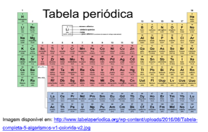
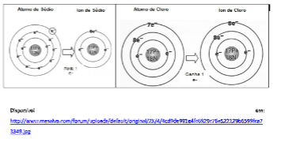

Capítulo 2
Projeções gráficas de movimentos com velocidade constante no setor Têxtil
Como a indústria têxtil leva em consideração conceitos da Física movimentos com velocidades constantes e suas projeções gráficas? Em que situações podemos aplicar estes conceitos na indústria têxtil?
CONTEXTUALIZANDOSem dúvidas alguns processos precisam ser levados em conta sob o aspecto da maneira constante com que acontece, o número de uma determinada produção de tecidos, o transporte de alguns insumos, como o algodão, por exemplo que vem do setor agrário, a presença dos responsáveis técnicos entre outros fatores. Desses contextos, pensar em situações que tenham fatores que não se alteram continuam ainda relevantes, e, dessa relevância mais especificamente da velocidade de produção e sua relação com a metragem de tecidos, ou ainda, a relação entre os quilômetros percorridos pelos meios de transporte considerando suas velocidades constantes aparecem como importantíssimas e representar estas informações de modo gráfico também para os movimentos estudados no capítulo anterior será nosso objetivo. 
(Re)construindo conceitosAs projeções gráficas podem aparecer em diversos contextos, neste capítulo vamos perceber como podemos utilizá-la para entender os movimentos com velocidades constantes. Basearemos nosso estudo sempre em questionamentos.

 Ação e Reflexão


 Ação e Reflexão

